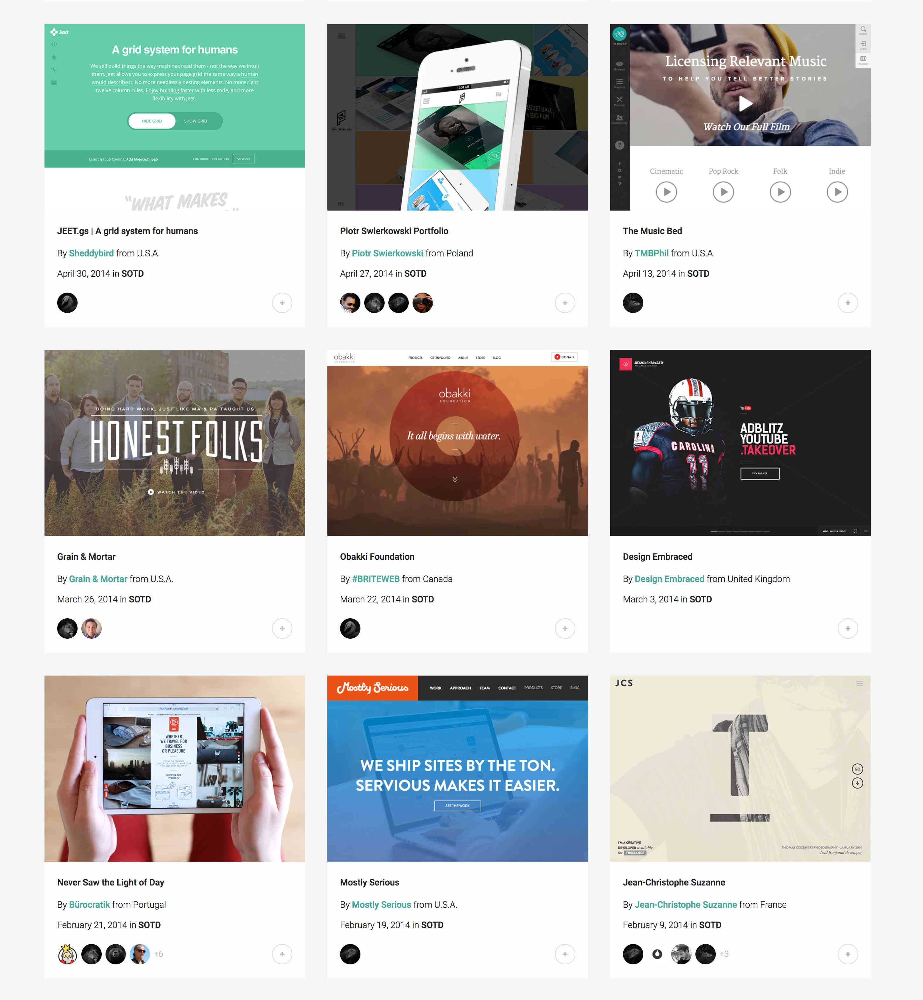
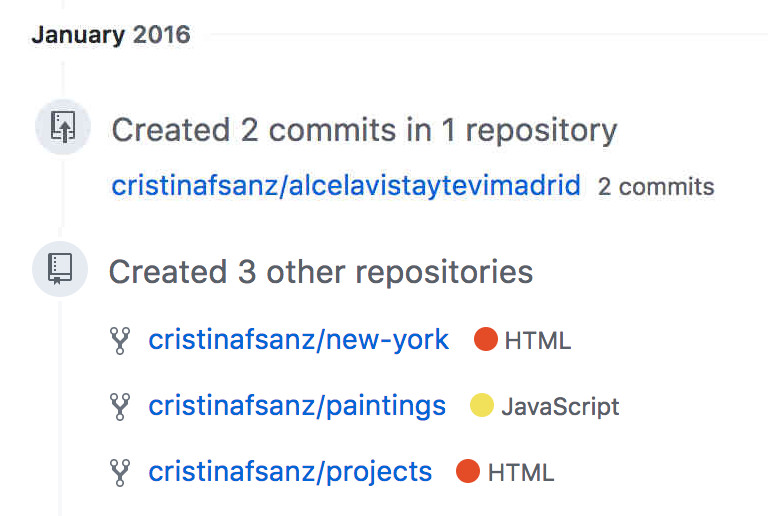
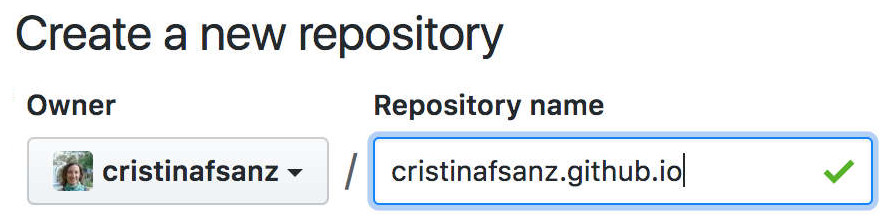
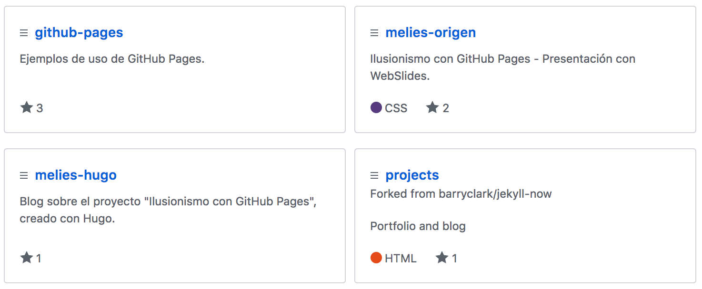
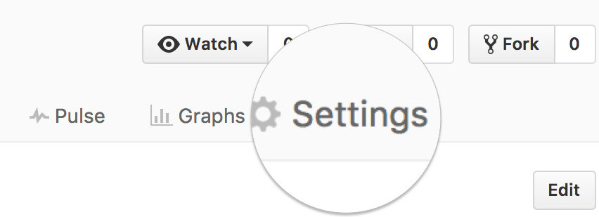
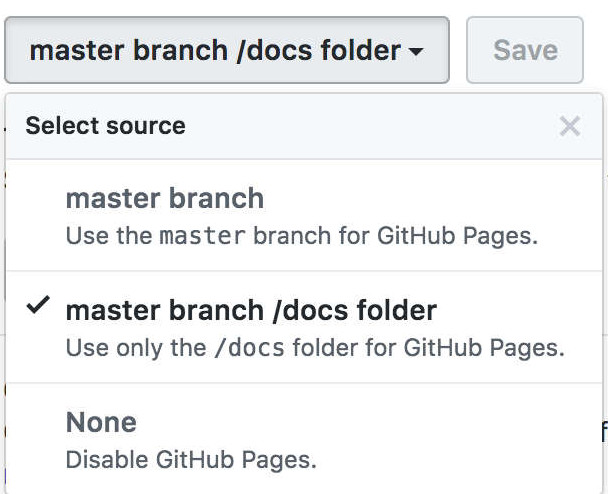
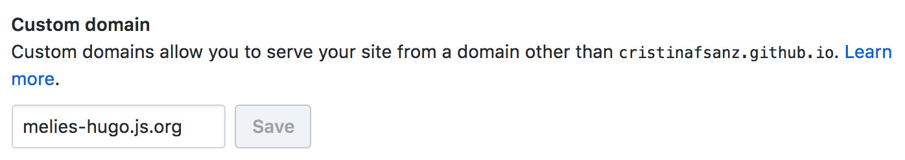
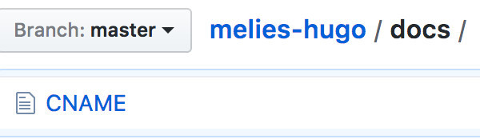
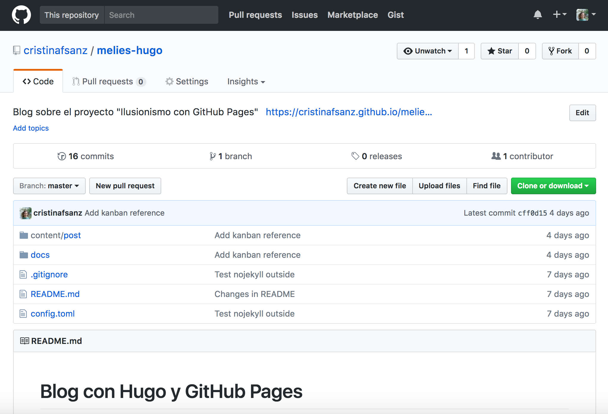
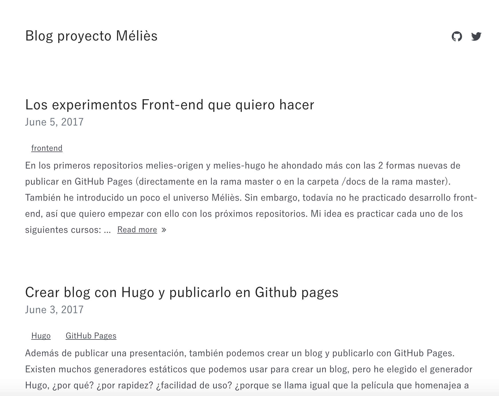

awwwards.com
Presentación Cinematógrafo (1895)
Mi GitHub (2016)
Git, GitHub y GitHub Pages
User site y Project sites
https://user.github.io
https://user.github.io/repository
User site y Project sites

git clone git@github.com/user/repository.git
cd repository
git add .
git commit -m "Mensaje"
git push origin master
Project sites
Habilitar GitHub Pages


Dominio personalizado


Ejemplo de uso: Blog


Hugo
Créditos
- WebSlides es una solución open source creada por @jlantunez, @Belelros y @luissacristan. Si quieres saber más, ¡ponte en contacto!